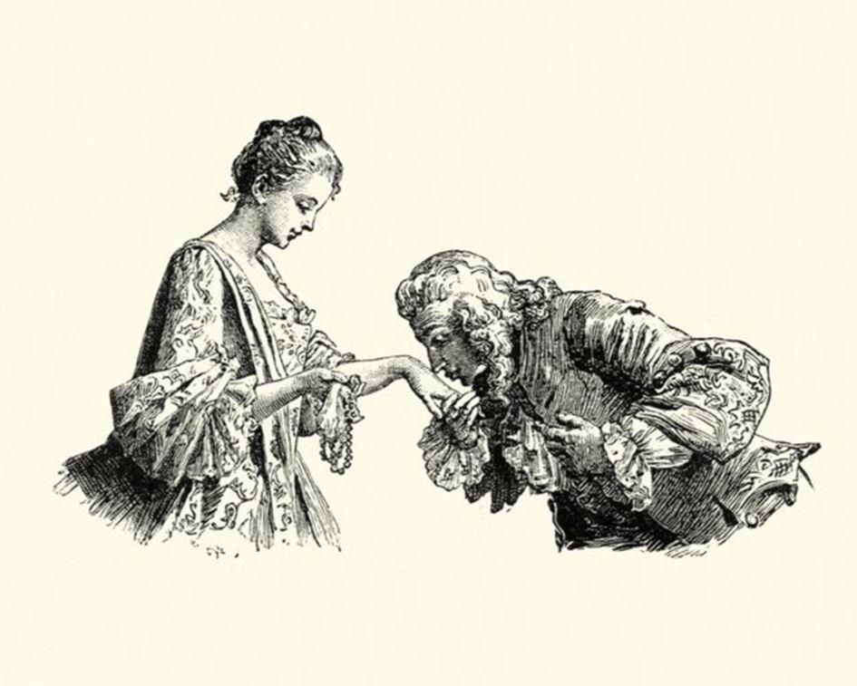

Les règles de la politesse sont des lois non écrites, mais auxquelles il est plus important d’obéir qu’aux lois écrites. Longtemps, les unes et les autres se sont complétées. Jusqu’à ce que les législateurs, enivrés par leur propre génie électif, entreprennent d’abolir et remplacer les premières. C’est-à-dire le savoir-vivre. Mais sans savoir-vivre, peut-on vivre encore ?
Charles Quint disait : « Je parle espagnol à Dieu, italien aux femmes, français aux hommes et allemand à mon cheval. » Voilà une conception du savoir-vivre qui est à la mesure d’un prince qui régnait sur un empire sur lequel le soleil ne se couchait jamais. Elle n’est pas à la portée de tous ; mais elle résume à merveille ce qu’est la politesse : l’art de « rendre à chacun ce qui lui revient », selon l’expression du duc de Saint-Simon. Autrement dit, de parler à chacun le langage qu’il peut entendre, pour lui montrer qu’on ne le prend pas pour un autre. Pour y parvenir, il suffit de jouir d’une faculté qui est, en principe, accordée à tous : savoir faire la différence entre divers objets tels que Dieu, une femme, un homme, un cheval, un réverbère.
Ça ne paraît rien, mais c’est essentiel, comme l’illustre le gag élémentaire mais efficace du monsieur distrait qui, s’étant cogné contre un réverbère, soulève son chapeau pour lui présenter ses excuses. Cet exemple invite à remarquer que la civilisation, à un certain degré de raffinement, exige le même discernement entre les choses qu’entre les gens. La réputation d’une personne bien élevée serait ruinée de manière bien plus sûre si elle servait le thé dans des verres à pied, ou du champagne dans des bols, que si elle proférait les jurons les plus orduriers.
Tout cela prouve que l’obéissance aux lois non écrites de la politesse passe avant l’obéissance aux lois que les législateurs de tout poil ont consignées dans d’épais recueils, et dont on dit que nul n’est censé les ignorer, alors qu’il est impossible de les connaître toutes.
Il est plus important d’être poli que d’être honnête, car la politesse conduit à l’honnêteté, au point que le sens de ces mots tend à se confondre, comme dans l’expression « civilité puérile et honnête ». A l’inverse, les gardiens tatillons des lois écrites se croient souvent permis de prendre un aspect revêche. De nos jours, ils sont même enclins à faire preuve d’une certaine indulgence à l’égard de ceux que des circonstances malheureuses conduisent à trucider leurs semblables à coups de hache rouillée, et plus encore de ceux qui posent des bombes, pourvu qu’ils invoquent un idéal quelconque ; et d’une sévérité sans faille envers ceux qui osent traverser la rue en dehors des clous, quand bien même ils auraient souffert d’une enfance malheureuse. Les arbitres des élégances sont plus souriants que les censeurs des mœurs.

VESSIES ET LANTERNES
Loin d’infirmer mon propos, l’expression « trop poli pour être honnête » le confirme. La politesse exige l’exactitude et ne souffre aucun excès. Se montrer « trop poli », c’est cesser de l’être, en cessant de rendre à chacun ce qui lui revient.
N’en point faire assez, c’est manquer à la politesse ; en faire trop, c’est y manquer tout autant. Car toute erreur, en fait de civilité, est une erreur sur la personne, qui transforme les formules de politesse en marques d’insolence ou, à l’inverse, de flagornerie. L’erreur prouve qu’on n’a pas vu à qui l’on a affaire ; à moins qu’elle ne trahisse l’intention de se faire valoir, ou encore d’obtenir quelque chose qu’on ne mérite pas. Cela revient à se prendre ou à se faire passer pour ce qu’on n’est pas, ce qui reste une erreur sur la personne : c’est celle que commettent ceux qui pètent plus haut que leur cul. Par conséquent, les gens « trop polis pour être honnêtes » sont à la fois malpolis et malhonnêtes.
Quelques auteurs ont tenté de coucher sur le papier les règles de la politesse, que les plus sages ont appelées, dans un esprit jurisprudentiel plutôt que normatif, les « usages du monde ». Malgré leur intérêt sociologique, les manuels de savoir-vivre comme ceux de la baronne Staffe tendent irrésistiblement vers le genre comique. C’est que les lois non écrites, par leur nombre infini comme par leur pittoresque variété, ressemblent aux hommes : comme eux, elles se prêtent mal aux codes rigides et aux classements définitifs. Les premiers législateurs suivirent par avance le conseil du comte de Maistre : « Ecrivons le moins possible ! » Le code d’Hammourabi tient tout entier sur une stèle de pierre noire, et les tables que Moïse a descendues du mont Sinaï se bornent à énoncer dix commandements. Une telle prudence n’est plus de mise, comme pour donner raison à Dostoïevski : « Là où il y a la loi, on peut toujours trouver le crime. » Ainsi, la première édition du code civil connaissait six cents crimes et délits ; il en recense à présent dix-huit mille. Pour les graver dans la pierre, les alignements de Carnac n’y suffiraient pas !
COMMENT VAS-TU-Y-AU DE POÊLE ?
Les vastes proportions de cette œuvre législative emportent l’admiration, mais suscitent l’inquiétude. La politesse repose en effet sur l’art de la discrimination. Or, tel est justement le crime que les législateurs de notre temps se sont donné pour mission d’éradiquer. Leurs illustres prédécesseurs ont proclamé à grands cris que les hommes sont égaux. Mais ils prirent soin de préciser (entre deux charretées de condamnés à mort, ce qui éclaire leurs intentions d’un jour singulier) qu’ils étaient égaux, oui, mais seulement devant la loi.
On entendait par là : devant la loi écrite, car, devant la loi non écrite, c’est l’inégalité qui est de rigueur et la discrimination qui s’impose.
Mais, depuis, le législateur a résolu de faire, passer les hommes de l’égalité formelle à l’égalité réelle. J’avoue que ça m’angoisse. Car remarquer les différences formelles, et en déduire des différences réelles, est un réflexe irrépressible et c’est même, si l’on y songe, le fondement de la démarche scientifique. Je crains qu’on n’en exige trop. Quand on me demande comment ça va, je réponds (comme la politesse l’exige) : « Ça va. »
Mais si on me demande si ça va vraiment bien, j’ai des doutes. Et je me regarde dans la glace, pour voir si j’ai vraiment si mauvaise mine.
Recenser les différences entre les hommes et les femmes est une tâche inachevée. Mais il sera encore plus long de prouver qu’il n’y en a aucune.
Quand on a perdu quelqu’un de vue depuis longtemps, on peut avoir oublié son nom, son visage et le son de sa voix. Mais si c’était un homme ou une femme, voilà ce qu’on n’oublie jamais. C’est encore trop, à ce qu’il paraît.
Hier, le quiproquo était un des ressorts du vaudeville, et porter à la fois une épaisse moustache et un chapeau à fleurs ne prêtait qu’à rire. Mais celui qui disait : « Salut vieille branche ! » à l’adjudant, on le collait au trou. Il semble que ces mœurs de caserne tendent à s’imposer. Demain, celui qui donnera du « mademoiselle » à une dame ne sera plus un farfelu ou un plaisantin, mais un délinquant. Il va falloir lui apprendre à vivre.
Partager cette page